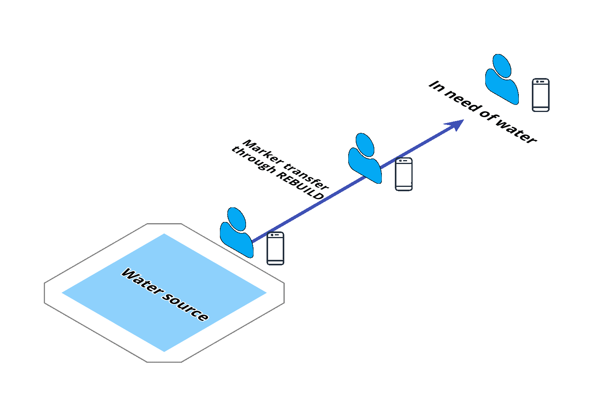
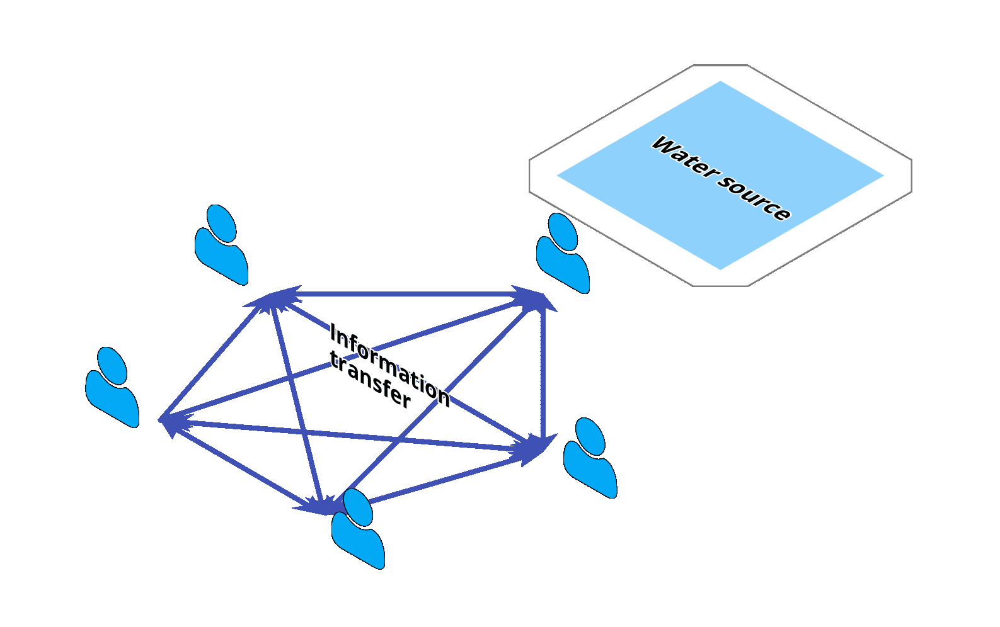
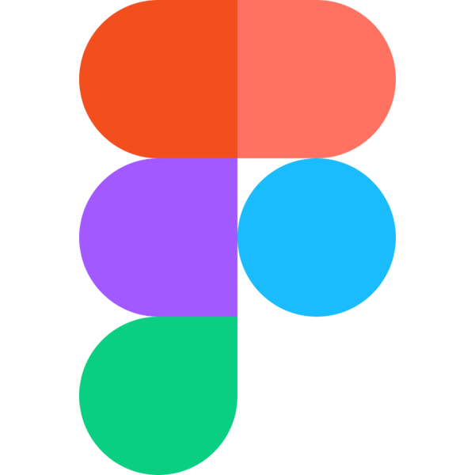

Rebuild is an Android application which creates a mesh network to automatically share vital disaster information data between nearby devices, without Wi-Fi or cell service.
The project was created during January 11-12 for nwHacks 2020, an annual hackathon hosted by nwPlus at the University of British Columbia.
Our team won 2nd place out of 145 teams and 769 hackers.


The Inspiration
We took inspiration chiefly from one of our team members' home country, Nepal. The country is ravaged by earthquakes several times every century, destroying homes, communities, and livelihoods. Though seeming catastrophic to us, the phenomenon simply is an unavoidable fact of life for Nepalese people. When an earthquake hits, power lines, water, and food can be unavailable for wide swathes of the country, which endangers citizens who need immediate aid but can no longer communicate through traditional phone lines or internet channels.
Not only are earthquakes a common issue in Nepal, but they are a pressing issue throughout the entire west coast of North America, which has been famously overdue for a massive earthquake which we are woefully unprepared for.
Another key inspiration was PulsePoint Respond, a mobile application which registers app users who can perform CPR. Whenever an emergency situation arises, 911 dispatch can send an alert to all nearby app users who are able to perform CPR, in order to administer first aid as quickly as possible. This leverages the ability to crowdsource strangers to assist nearby people in need - an important aspect of our solution.
In essence, our goal was to create a technological solution to assist recovery efforts and support citizens in receiving immediate aid - during an emergency where internet and cellular networks are crippled.
Solution
Our solution is Rebuild, an Android application. Users share and receive information about nearby resources and dangers by placing icons on a map. The application then creates a mesh network between other devices with the same application to automatically transfer data, ensuring that users have the most recent support information.
What makes Rebuild unique and effective is that it does not require wifi or cell service to share and receive data. The mesh network created by the application between phones is the core of this application, and allows information sharing when all other systems are incapacitated.
In short, this solution provides the capability for many citizens to communicate essential information in an emergency situation across great distances.
The System
For many years, a decentralized network has been the dream of entrepreneurs and technologists. A decentralized network consists of nodes which convey information between each other, and therefore does not (always) require a centralized server, or dedicated connection to existing infrastructure for communication. One of the most famous examples is HBO's Silicon Valley. Bringing such a concept into widespread adoption would mean the ability to create a community or communication system outside of the vices of the traditional internet and cellular system - unlocking possibilities never before considered.
We took the concept of the decentralized network and applied it to the emergency situation where internet and cellular networks are unavailable - in which case, mobile phones consist of the nodes which communicate information between each other. This is called our mesh network between mobile devices. In Rebuild, this communicates between different devices to share information - namely, the markers with local resources and dangers. Nearby devices share their markers with each other, and when people wander to different areas, the markers will continue to be shared with more and more people.
Take someone who is farther from the marker than the connection distance between two devices, and therefore unable to connect to someone currently at the marker broadcasting the location. As long as they are connected to another person on the mesh network who has the marker registered, they will be able to receive the location and see it on their map. For example, see the following diagram:
A complete mesh network would therefore look similar to the following diagram:
Android Application

The mobile application is built on Android, and primarily consists of two distinct sections:
- A view of all current markers with a button to add markers, and
- A passive set of background services which handle the mesh network connections and sharing/receiving of markers.
We built our mesh network on Android's Nearby Communications API. Our mesh network service constantly attempts to connect with nearby devices using the same application and maintains these connections up to a distance, which we verified to be at least 70 metres and around a corner.
The second background service handles messaging, and every so often will share the device's list of markers with all currently connected devices. When markers are received, duplicates are eliminated and unique new markers are instantly added to the map. We verified the sharing and refresh rate to sometimes be within 10 seconds, even in a hall crowded with people and other devices.
UX/UI Design (Figma)
To visually understand how users would navigate and use the application, user flows were created using Figma and passed to the developers.
To learn more about the creative process for Rebuild, visit Michelle Swolfs' portfolio here.
Results
We placed 2nd in the hackathon out of 145 teams and 769 hackers.
Congrats to Rebuild for winning 2nd place at @nwplusubc this weekend! #nwHacks2020 pic.twitter.com/Bw0ms7wHED
— Major League Hacking (@MLHacks) January 13, 2020
The judges consisted of:
- Google Developer Advocate Ryan Matsumoto,
- Bloomberg Software Engineer Calvin Cheng,
- Hootsuite Software Developer Rafael Jacinto, and
- UBC Research Coordinator Jacqueline Ashby.
About the Team
The creators of this project are Jeffrey Leung, Michelle Swolfs, Praneer Shrestha, Amir Naghibi, and Shea Janke.
Disclaimer: This page was created after the hackathon's completion.